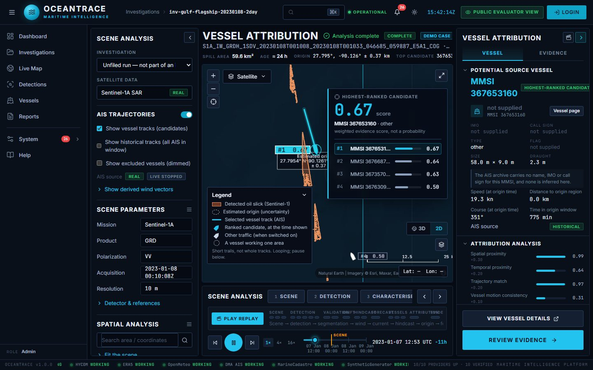
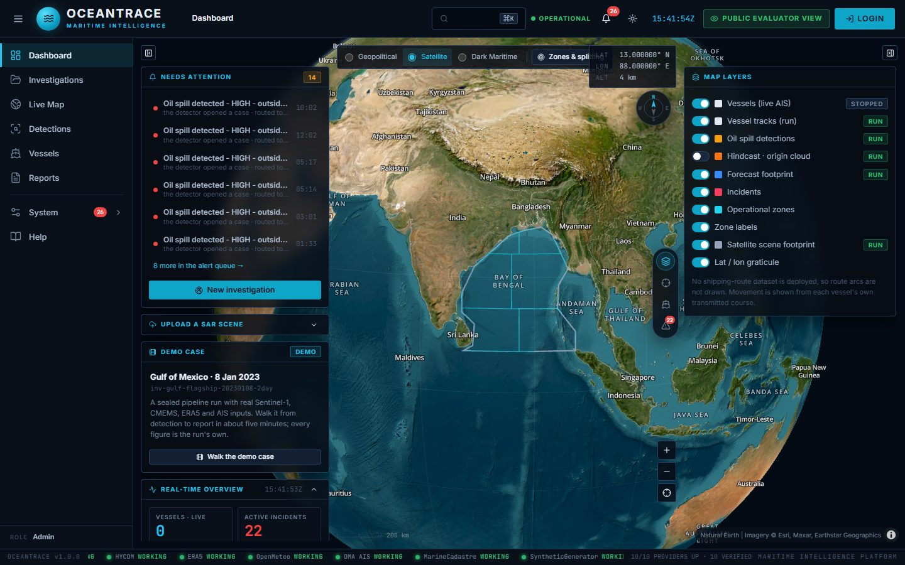
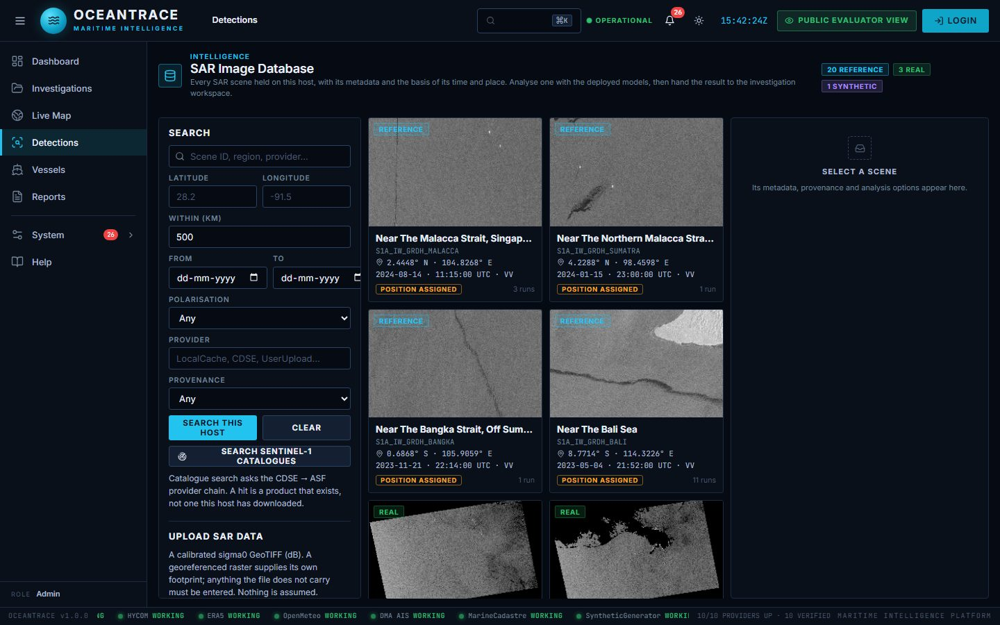
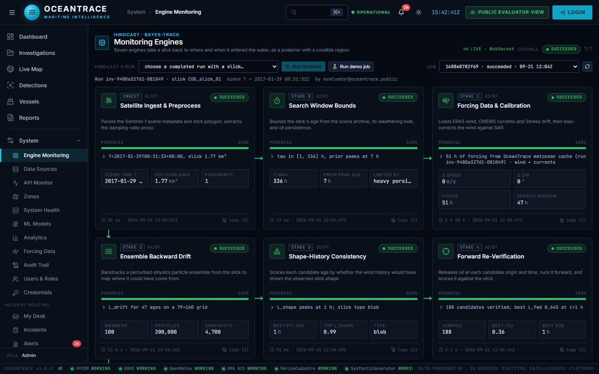
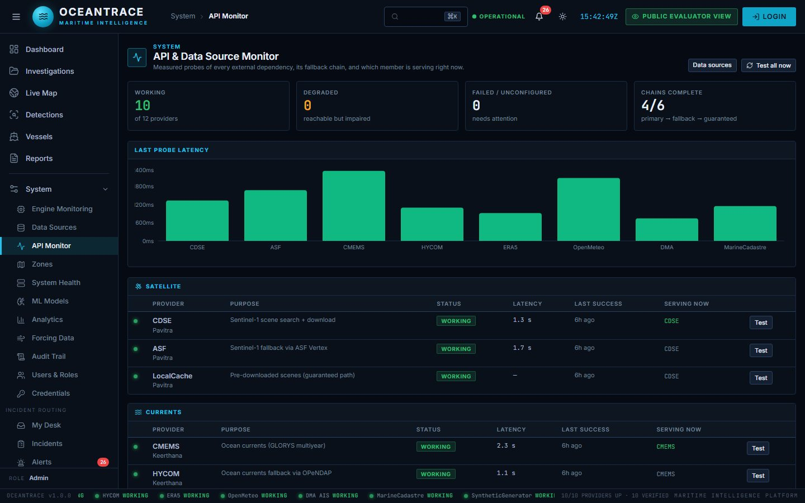
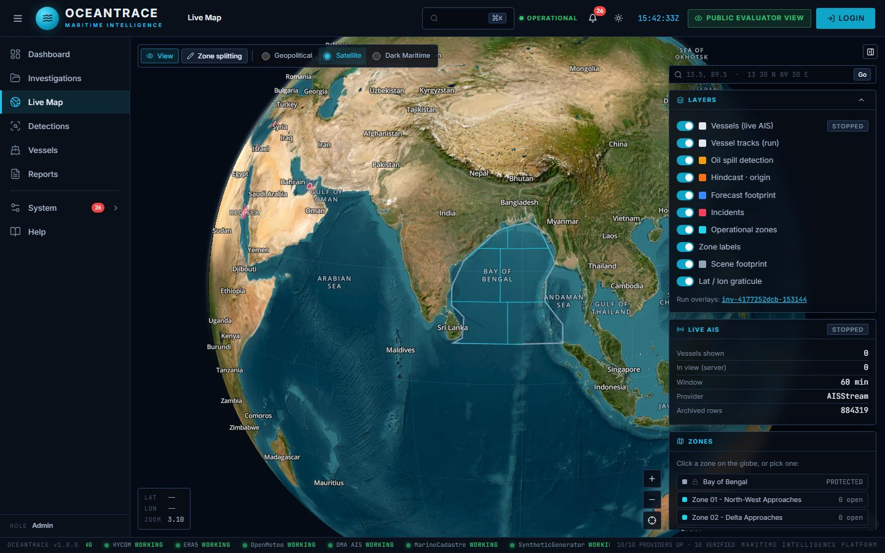

Find the oil spill.
Trace it to the ship.
OceanTrace detects oil slicks in Sentinel-1 satellite radar, drifts them back in time with real wind and ocean currents, and ranks the vessels whose AIS tracks put them at the origin, with the evidence behind every score.
No login needed: the live system opens in a read-and-run evaluator view. Sign-in with roles (analyst, reviewer, admin) is available from its Login button.

From a radar image to a ranked list of suspects
Every stage records where its data came from. If a source is unavailable, the stage says so. Nothing is filled in with made-up data.
Acquire
Sentinel-1 SAR scene via Copernicus (CDSE), falling back to NASA ASF or the local cache.
Detect
Two-stage AI: a YOLO screen separates oil from look-alikes (DARTIS), then a U-Net outlines the slick (Trujillo). Both run as ONNX on CPU.
Characterise
Slick area, shape and weathering, with a confidence level for each detection.
Drift
An ensemble particle model drifts the slick back and forward in time with ERA5 wind and CMEMS currents to estimate where it started.
Attribute
AIS tracks are matched against the origin in space and time. Vessels are ranked by a weighted evidence score, not a probability.
Gulf of Mexico · 8 January 2023
A sealed, fully reproducible run on real inputs. Its artefacts are content-hashed, so the live system can prove they have not changed since the run.
- Scene
- Sentinel-1A IW GRD, 10 m, VV
- Slick
- 59.6 km², about 24 h old
- Origin
- 27.795° N, 90.126° W (± 0.37 km)
- AIS
- MarineCadastre archive, 7–8 Jan 2023
- Top suspect
- MMSI 367653160, score 0.67
In the live system, press Play replay to watch the case run from orbit to the report.
Open this case live →See it in action
Screens from the live deployment
Captured from the running system. Click any screen to enlarge it.





- It runs on the team's own machine. If the status above says offline, the screens on this page show the same system.
- Sealed demo runs open instantly. Starting a new analysis downloads a full satellite scene and can take several minutes.
- Candidate scores are weighted evidence for investigators, not proof of guilt and not probabilities.